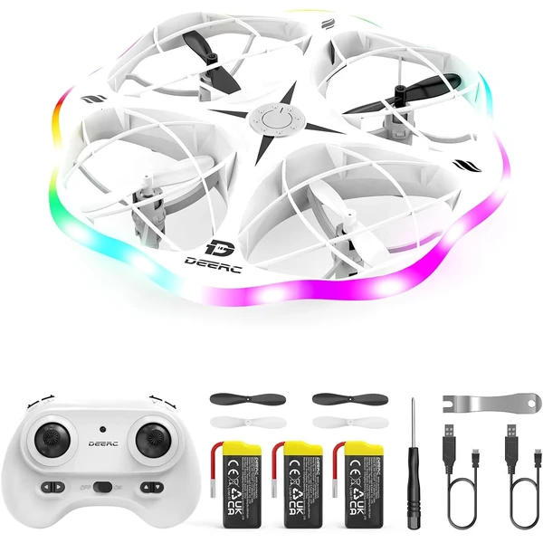

👶 7 años
DEERC D13 Mini Drone
Un dron compacto con sensores que detectan y evitan obstáculos automáticamente, pensado para que los más pequeños vuelen con seguridad. Incluye 3 baterías para prolongar el tiempo de juego.
⭐
¿Por qué nos gusta?
- ✔Detecta y evita obstáculos automáticamente.
- ✔Incluye 3 baterías para volar más tiempo.
- ✔Despegue y aterrizaje con un solo botón.
💬
Lo que más destacan las familias
Muchos padres coinciden en que el sistema anti-obstáculos da mucha tranquilidad la primera vez que el niño vuela solo. Se destaca también lo sencillo que resulta despegar y aterrizar con un solo botón.